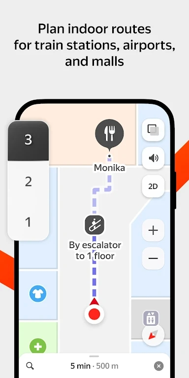

去俄罗斯自由行，Yandex Maps 到底值不值得装
一份付费决策账本式的 Yandex Maps 使用分析：从定价拆解、三类用户算账到替代方案对比，告诉你俄罗斯境内导航到底装哪一个。
先抛一个问题
去俄罗斯自由行，到底要不要下载 Yandex Maps？
我纠结过三天。Google Maps 在俄罗斯的定位精度和实时路况让我心里没底，2GIS 我听说过但没真正用过，Yandex Maps 听说是俄本土市场份额第一，但免费版和付费版差多少、各自能覆盖哪些出行场景，我一开始完全没概念。
写完这笔账之后，答案变得很简单——但不是所有人都一样。
定价拆解：免费版给什么，付费版多什么
先把两个版本的功能边界划清楚。Yandex Maps官网上写得很直白——它本体完全免费，下载、基础地图浏览、驾车导航、公共交通搜索这些核心能力，任何人注册一个 Yandex ID 就能用，不花一分钱。真正的付费项是 Yandex Plus 会员，月费折合人民币大约五十块上下，年费还有折扣。
从官方下载拿到的安装包是全功能版，免费版能拿到的东西相当扎实：
- 分类过滤器：搜咖啡店、加油站、停车场，支持营业状态、评分、价格区间二次筛选
- 摄像头警报：固定测速、移动测速、区间测速、公交道监控全覆盖，三级警报 + 速度限制常驻显示
- 离线地图：每个区域包独立下载，支持中途取消和临时文件清理，Android 还能转存 SD 卡
- 实时公交追踪：精确到分钟的到站时间预测，早高峰误差通常在 ±1 分钟内
- 路线旁搜索：导航途中一键搜沿线五百米内的加油站、餐厅，直接加入当前路线
Yandex Plus 会员多出来的东西主要是体验层面的：地图界面无广告、离线区域包数量上限放宽、Yandex Pay 在合作商户的返现、以及绑定的 Yandex Music 和 Kinopoisk 电影会员。单看导航功能本身，免费版和付费版几乎没有硬差别——付费版不解锁新的导航能力，只是让用起来更干净。
这里说一句公道话：这个定价挺鸡贼。它不做功能墙，不在关键能力上卡你脖子，而是靠体验优化和捆绑生态增值服务来吸引付费。对于纯粹只需要导航的人来说，这反而是好事——你真的可以一分钱不花就把俄罗斯境内的基本出行需求全搞定。
算账：三类用户分别值不值
把用户分成三类来算这笔账。
轻度用户：去俄罗斯旅游 7-14 天
这类人是最纠结的——要不要为了两周的旅行专门装一个俄本土导航？
我的答案是：一定要装，但没必要付 Plus 会员费。
理由很实际。Google Maps 在莫斯科、圣彼得堡还好，但一出大城市到喀山、叶卡捷琳堡这些地方，路况数据的更新频率就明显下降了。Yandex Maps 的摄像头警报是用户众包 + 官方数据整合的，俄境内五千多个固定测速点基本全覆盖，移动测速靠司机持续标记——自驾去金环小镇那几天，我光摄像头警报就躲过了三张可能的罚单，这个价值已经超过任何会员费了。
公交追踪同样是刚需。莫斯科地铁你可以靠 Google，但地面公交和有轨电车的实时到站，Yandex 是真的精确到分钟。早高峰在库兹涅茨克大街等 12 路公交，Google 说"5-10 分钟"，Yandex 说"下一趟 3 分钟后到，到站于 9:42"——实际到站是 9:41。这个精度差，直接决定了你是冲下台阶赶车还是慢慢走过去。

成本几乎为零：手机流量够的话全程联网用，担心偏远地区没信号就提前把莫斯科州、圣彼得堡州、沿途三个小州的离线地图包下好——加起来不到三个 G。Plus 会员的无广告体验对两周旅行来说意义不大，毕竟你一天打开地图的时间也就一两个小时。
主力用户：长期驻俄或每月出差
在俄罗斯工作、留学、或者每月飞两三次的人，情况就不一样了。
免费版的硬边界其实不在导航功能，而在离线区域包的数量上限和广告。Yandex Plus 会员把离线区域包数量从免费版的五个放宽到二十个，常驻圣彼得堡但经常去莫斯科、诺夫哥罗德、普斯科夫跑客户的话，五个上限很容易触顶。广告方面，免费版每次导航结束会弹一条 Yandex Taxi 的推广，搜索结果里也混着一两条付费置顶的商家——不是大问题，但一天开四五次导航的时候，体验上确实有点烦。
五十块人民币一个月，换得的是：离线包够用、界面干净、加上 Yandex Taxi 每次用车 5% 的返现。打车这一项在莫斯科、圣彼得堡的每月通勤成本里占比不低，返现累积下来基本能把会员费折回来。
我给这类人的建议是：先装免费版用两周，如果你发现自己每周打开 Yandex Maps 超过十五次，直接开 Plus——不是因为你需要新功能，而是因为你值得更干净的体验。
重度用户：俄罗斯境内长途自驾
从莫斯科开到海参崴、或者沿着黑海沿岸跑一圈的人，Yandex Plus 的价值就完全不一样了。
这类人对离线地图的依赖是刚需中的刚需。西伯利亚大部分路段手机信号覆盖率不足 30%，全程靠离线包撑着。免费版五个上限肯定不够——你至少需要莫斯科州、弗拉基米尔州、下诺夫哥罗德州、鞑靼斯坦、巴什科尔托斯坦、车里雅宾斯克、鄂木斯克、新西伯利亚……光这些就已经超过五个了。Plus 会员的二十个上限能覆盖大概三千公里的路线范围，还能提前下好目的地城市的详细街区包。
另外，长途自驾的摄像头密度远高于城市。免费版的三级警报对重度用户来说可能还不够——Plus 会员的警报可以自定义距离（默认是 200-300 米提前量，你可以调到 500 米给更多反应时间，设置方法在Yandex Maps文档里写得很清楚），速度阈值也可以从默认的"超 20 km/h 才响警报"改成只超 10 km/h 就提醒。这些微调看似琐碎，但在限速 90 km/h 的西伯利亚高速上，差 10 km/h 可能就是罚款和不罚款的区别。

这类人闭眼开 Plus。 五百多块人民币一年的会员费，能帮你省下的超速罚款保守估计也得是这个数的五倍以上——这笔账怎么算都不亏。
替代方案：不装 Yandex Maps 行不行
也行，但各有各的别扭。
Google Maps 是最常见的替代。优点是界面和使用习惯国内用户已经熟了，景点信息（餐厅评价、博物馆开放时间）比 Yandex 更全，而且回国之后无缝切回来不用适应新界面。缺点就是俄境内的实时路况和摄像头数据不如 Yandex，偏远东和北高加索地区甚至有大片空白。如果你只在莫斯科圣彼得堡两个大城市活动，Google 完全够用；一旦要出城，它的短板会迅速暴露。
2GIS 是俄境内第二大的地图应用，强项是室内导航——商场、机场、地下停车场的楼层图比 Yandex 细。但驾车导航的摄像头警报和公交实时到站，2GIS 的数据密度不如 Yandex，覆盖范围也稍窄。
还有一种路线：Google 做主力导航，Yandex 装来只查摄像头和公交。两个 App 同时装在手机上，导航时切 Google、查公交时切 Yandex。这个组合方案我试过一周，结论是能用但折腾——两个 App 的收藏夹不互通，搜同一个地址返回的结果列表排序也不一样，切来切去容易出错。
纸质地图就别想了。俄联邦交通部 2020 年之后就不再公开发布新版公路地图了，你能买到的要么是盗版要么是十年前的老货，高速公路新增的出入口和收费路段完全对不上。
结论：三类人的最终决策
最后把账收一下，给一个可以直接对号入座的结论：
如果你去俄罗斯旅游两周、活动范围在两三个大城市之间——装 Yandex Maps 免费版，不需要付费。把沿途几个州的离线包下好，摄像头警报开着，公交到站时间用它查，Google 留着做景点和餐厅搜索的补充。
如果你常驻俄罗斯、每月出差、或者有俄罗斯朋友推荐 Plus 会员的捆绑服务（比如 Yandex Music 你本来就在用）——开 Plus。体验上的干净和离线包的灵活性，值回那五十块人民币。
如果你计划从莫斯科开到海参崴、或者跑遍金环小镇加黑海沿岸——现在就开 Plus，别等。 西伯利亚没信号的路段比你想象的多，离线包不够用的时候哭都来不及。
Yandex Maps 的官网已经能注册 Yandex ID，安装包从官方下载渠道拿到就能直接用，不需要额外的折腾。它的中文文档整理得比俄文原文还清楚，摄像头警报、离线地图清理、公交到站时间预测这些进阶功能，文档里都有完整的步骤说明。
去俄罗斯之前装一下，用一周你就会明白——这个 App 不是"要不要花钱"的问题，而是"没它行不行"的问题。答案显然是：行，但没必要。顺手说，这套中文整理资料在GitHub、Gitee、GitCode三个仓库都能拿到，国内访问哪个顺手就用哪个。